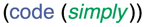

| Fake CPAN site hosted by |
|  |
The Fake CPAN is, right now, just files served statically. It might be provided by a web application in the future, to allow certain dynamic fake CPANs, but right now that would be serious overkill. Fake CPANs are copied into the master ./fake directory.
The Fake CPAN's source will always be free. At present, apart from the HTML documents which can be easily retrieved, there are only a few source documents:
|
|
|